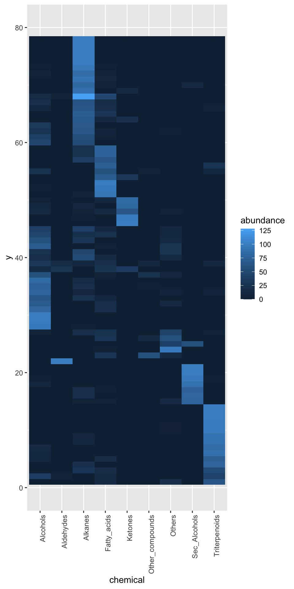
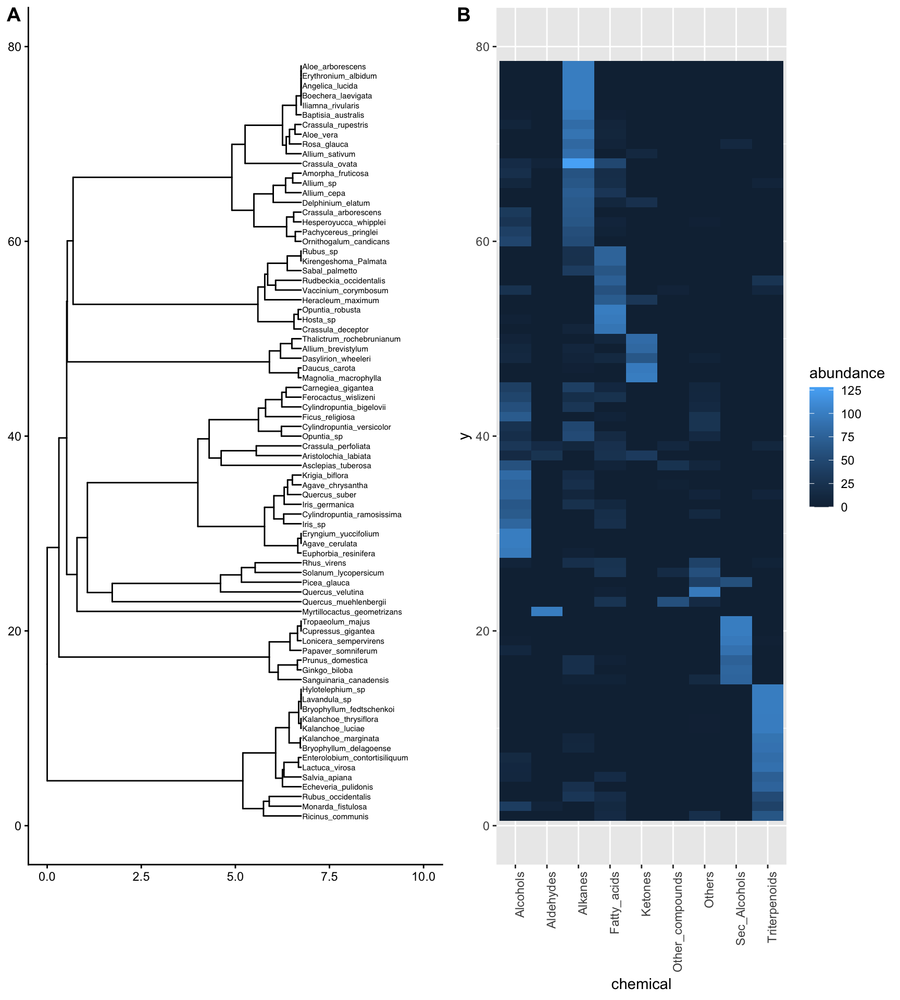
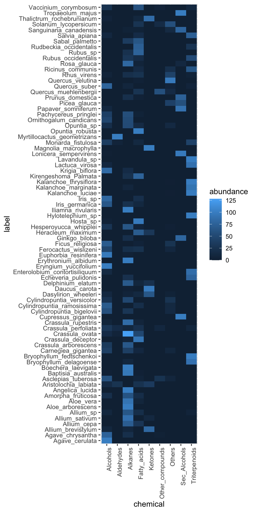

hierarchical clustering

“Which of my samples are most closely related?”
clustering
So far we have been looking at how to plot raw data, summarize data, and reduce a data set’s dimensionality. It’s time to look at how to identify relationships between the samples in our data sets. For example: in the Alaska lakes dataset, which lake is most similar, chemically speaking, to Lake Narvakrak? Answering this requires calculating numeric distances between samples based on their chemical properties, just as we did for networks, and then building a tree from those distances. We can do it all in one step by using analysis = "hclust":
AK_lakes_clustered <- runMatrixAnalysis(
data = alaska_lake_data_wide,
analysis = c("hclust"),
scale_variance = TRUE,
tree_method = "linkage_dendrogram",
agglomeration_method = "ward.D2",
columns_w_values_for_single_analyte = colnames(alaska_lake_data_wide)[3:15],
columns_w_sample_ID_info = c("lake", "park")
)
AK_lakes_clustered
## # A tibble: 39 × 26
## sample_unique_ID lake park parent node branch.length
## <chr> <chr> <chr> <int> <int> <dbl>
## 1 Devil_Mountain_La… Devi… BELA 31 1 0.973
## 2 Imuruk_Lake_BELA Imur… BELA 39 2 0.820
## 3 Kuzitrin_Lake_BELA Kuzi… BELA 38 3 0.703
## 4 Lava_Lake_BELA Lava… BELA 33 4 0.743
## 5 North_Killeak_Lak… Nort… BELA 22 5 4.09
## 6 White_Fish_Lake_B… Whit… BELA 22 6 4.09
## 7 Iniakuk_Lake_GAAR Inia… GAAR 29 7 1.27
## 8 Kurupa_Lake_GAAR Kuru… GAAR 36 8 0.954
## 9 Lake_Matcharak_GA… Lake… GAAR 36 9 0.954
## 10 Lake_Selby_GAAR Lake… GAAR 37 10 1.12
## # ℹ 29 more rows
## # ℹ 20 more variables: label <chr>, isTip <lgl>, x <dbl>,
## # y <dbl>, branch <dbl>, angle <dbl>, bootstrap <dbl>,
## # water_temp <dbl>, pH <dbl>, C <dbl>, N <dbl>, P <dbl>,
## # Cl <dbl>, S <dbl>, F <dbl>, Br <dbl>, Na <dbl>,
## # K <dbl>, Ca <dbl>, Mg <dbl>Three of those arguments are worth a closer look:
-
scale_variance = TRUEscales every variable before the distances are computed, for exactly the reasons we covered in the networks chapter. For clustering,runMatrixAnalysis()does not scale unless asked to, so don’t leave this out. -
tree_method = "linkage_dendrogram"builds the tree by hierarchical clustering proper: the step-by-step merging described below. The other option,"neighbor_joining", is a tree-building method borrowed from phylogenetics, and it ignores the agglomeration method entirely. -
agglomeration_methoddecides how groups of samples are merged as the tree is built. It is the subject of the second half of this chapter. For now we use Ward’s method,"ward.D2".
It works! Now we can plot our cluster diagram with a ggplot add-on called ggtree. We’ve seen that ggplot takes a “data” argument (i.e. ggplot(data = <some_data>) + geom_*() etc.). In contrast, ggtree takes an argument called tr, though with the output of the runMatrixAnalysis() function, these two (data and tr) can be treated the same, so, use: ggtree(tr = <output_from_runMatrixAnalysis>) + geom_*() etc.
Note that ggtree also comes with several great new geoms: geom_tiplab() and geom_tippoint(). Let’s try those out:
library(ggtree)
AK_lakes_clustered %>%
ggtree() +
geom_tiplab() +
geom_tippoint() +
theme_classic() +
scale_x_continuous(limits = c(0,10))![A first, unstyled dendrogram of the Alaskan lakes. A tree diagram in which each tip is one lake and each join is the merge of two groups, with the horizontal position of a join recording how far apart those two groups were when they merged; joins near the root therefore mark very different groups. Tip labels are the combined lake and park identifiers, and every tip is drawn at the same horizontal position because a hierarchical clustering dendrogram is ultrametric. Data are the 'alaska_lake_data' dataset used in UMD CHEM5725, clustered on thirteen scaled analytes with Ward linkage.](index_files/figure-html/unnamed-chunk-287-1.png)
Figure 2.9: A first, unstyled dendrogram of the Alaskan lakes. A tree diagram in which each tip is one lake and each join is the merge of two groups, with the horizontal position of a join recording how far apart those two groups were when they merged; joins near the root therefore mark very different groups. Tip labels are the combined lake and park identifiers, and every tip is drawn at the same horizontal position because a hierarchical clustering dendrogram is ultrametric. Data are the ‘alaska_lake_data’ dataset used in UMD CHEM5725, clustered on thirteen scaled analytes with Ward linkage.
Cool! Though that plot could use some tweaking… let’s try:
AK_lakes_clustered %>%
ggtree() +
geom_tiplab(aes(label = lake), offset = 0.2, align = TRUE) +
geom_tippoint(shape = 21, aes(fill = park), size = 4) +
scale_x_continuous(limits = c(0,12)) +
scale_fill_brewer(palette = "Set1") +
# theme_classic() +
theme(
legend.position = c(0.2,0.8)
)![The same dendrogram, with lake names as tip labels and park identity shown on the tips. A tree diagram in which each tip is one of twenty Alaskan lakes, the tip label gives the lake name, and the fill color of the tip point gives the national park the lake sits in (BELA, GAAR or NOAT). Each join marks the merge of two groups and is positioned at the distance at which they merged. North Killeak and White Fish join only at the far right, which marks them as the two most distinctive lakes in the set. Data are the 'alaska_lake_data' dataset used in UMD CHEM5725, clustered on thirteen scaled analytes with Ward linkage.](index_files/figure-html/unnamed-chunk-288-1.png)
Figure 2.10: The same dendrogram, with lake names as tip labels and park identity shown on the tips. A tree diagram in which each tip is one of twenty Alaskan lakes, the tip label gives the lake name, and the fill color of the tip point gives the national park the lake sits in (BELA, GAAR or NOAT). Each join marks the merge of two groups and is positioned at the distance at which they merged. North Killeak and White Fish join only at the far right, which marks them as the two most distinctive lakes in the set. Data are the ‘alaska_lake_data’ dataset used in UMD CHEM5725, clustered on thirteen scaled analytes with Ward linkage.
Very nice! Since North Killeak and White Fish are so different from the others, we could re-analyze the data with those two removed:
alaska_lake_data_wide %>%
filter(!lake %in% c("North_Killeak_Lake","White_Fish_Lake")) -> alaska_lake_data_wide_filtered
runMatrixAnalysis(
data = alaska_lake_data_wide_filtered,
analysis = c("hclust"),
scale_variance = TRUE,
tree_method = "linkage_dendrogram",
agglomeration_method = "ward.D2",
columns_w_values_for_single_analyte = colnames(alaska_lake_data_wide_filtered)[3:15],
columns_w_sample_ID_info = c("lake", "park")
) %>%
ggtree() +
geom_tiplab(aes(label = lake), offset = 0.2, align = TRUE) +
geom_tippoint(shape = 21, aes(fill = park), size = 4) +
scale_x_continuous(limits = c(0,9)) +
scale_fill_brewer(palette = "Set1") +
# theme_classic() +
theme(
legend.position = c(0.1,0.85)
)
## Replacing NAs in your data with mean![The Alaskan lakes re-clustered with the two most distinctive lakes removed. A tree diagram of the same form as the previous figure but with eighteen tips: North Killeak and White Fish were dropped before the distances were recomputed. The tip label gives the lake name and the tip fill color gives the national park. Removing the two outliers rescales the horizontal axis, which makes the structure among the remaining lakes readable. Data are the 'alaska_lake_data' dataset used in UMD CHEM5725, clustered on thirteen scaled analytes with Ward linkage.](index_files/figure-html/unnamed-chunk-289-1.png)
Figure 2.11: The Alaskan lakes re-clustered with the two most distinctive lakes removed. A tree diagram of the same form as the previous figure but with eighteen tips: North Killeak and White Fish were dropped before the distances were recomputed. The tip label gives the lake name and the tip fill color gives the national park. Removing the two outliers rescales the horizontal axis, which makes the structure among the remaining lakes readable. Data are the ‘alaska_lake_data’ dataset used in UMD CHEM5725, clustered on thirteen scaled analytes with Ward linkage.
concept check
Fill in the blank with the tree_method that builds the tree by step-by-step merging. Press Run. This one takes a few seconds, and the object it makes is used again later in the chapter.
Self-check: a colleague repeats this run with tree_method = “neighbor_joining”, once with ward.D2 and once with single, and reports that the agglomeration method made no difference at all. What went wrong?
how the tree is built
Hierarchical clustering builds its tree from the bottom up, by a very simple procedure:
- Start with every sample in a group of its own.
- Find the two groups that are closest to each other, and merge them into one group.
- Repeat step 2 until everything is in a single group.
Each merge becomes a join in the tree, and the position of the join records how far apart the two groups were when they merged. Branches that join close to the tips were very similar. Branches that only join near the root were very different.
Step 2 hides a question, though. At the start, every group is a single sample, so the distance between two groups is simply the distance between two samples, read straight from the distance matrix. But after the first merge, how far is a group of two samples from a third sample? Or from a group of five? There is no single right answer. The rule chosen is called the agglomeration method, or linkage, and different rules build different trees from exactly the same distance matrix. In practice, the choice of linkage often changes the tree more than the choice of distance measure does. (We will meet other ways of measuring distance when we get to embeddings.)
concept check
Fill in the blank with the column to sort by, so that the closest pair of lakes comes to the top. Press Run.
Self-check: the pair at the top of that table is the first merge the algorithm makes, and it is the same first merge under single, complete, average and Ward linkage. Why do all four agree here?
reading a dendrogram
Two questions come up almost every time one of these plots appears, and they have short answers.
Read across, not down. All of the information is in the horizontal direction. Each join sits at the distance at which its two groups merged, so the horizontal distance from the tips back to a join says how far apart those groups were. Joins close to the tips are groups that merged early because they were alike; joins far out toward the root merged late, because whatever they brought together was not alike at all.
Compare joins; do not try to measure one. These plots are drawn without a numeric axis, and that is deliberate rather than an omission. The horizontal spacing is a faithful rescaling of the distances, so every comparison read off the picture is exactly right — which of two joins is deeper, and by what factor. One group merging at twice the distance of another really does look twice as far out from the tips. What the picture will not give is the raw number itself, and nothing a dendrogram is for depends on having it: every question in this chapter is answered by comparing joins, or by cutting the tree, and both are comparisons. When an actual distance is wanted, it is in the distance matrix.
The vertical direction means nothing at all. The tips are spread evenly down the page for one reason: so the labels fit and can be read. There is no quantity on that axis. Worse, the order itself is arbitrary — at every join, either branch may be drawn above the other, and both drawings are the same tree. A dendrogram can be flipped at any of its joins and still say exactly what it said before.
The consequence is the single most common misreading: two tips sitting next to each other are not necessarily similar. In the Alaska tree above, Lake Kangilipak and Okoklik Lake are neighbors on the page, and they are indeed the closest pair in the whole data set, 0.78 apart. But White Fish Lake and Wild Lake are neighbors on the page too, and they sit 7.57 apart — nearly ten times as far, and in the most distant fifth of all the pairs in the data. Their lines do not meet until the very last join in the tree. Two pairs, printed identically, meaning opposite things.
So to judge how related two tips are, ignore how close together they are printed. Trace left from each of them until the two paths meet. That meeting point is their join, and how far out it sits is the answer.
concept check
Fill in the blank with the lake that sits next to White Fish Lake on the tree. Press Run, and compare the two distances that come back — both pairs are neighbors on the page.
Self-check: in the Alaska tree, Lake Kangilipak sits next to Okoklik Lake and White Fish Lake sits next to Wild Lake. Both pairs are neighbors on the page. What does that tell you about the two pairs?
single versus complete linkage
The two extremes are the easiest to understand:
- Single linkage: the distance between two groups is the distance between their closest members. Two groups merge as soon as any one sample in the first is near any one sample in the second.
- Complete linkage: the distance between two groups is the distance between their furthest members. Two groups only merge once every sample in the first is reasonably close to every sample in the second.
Let’s see what difference this makes, using the solvents dataset. We will cluster the solvents on six physical properties. (We leave out vapor_pressure, because it is missing for five of the solvents.) Everything is identical between the two runs except the agglomeration method:
solvent_properties <- c(
"boiling_point", "melting_point", "density",
"relative_polarity", "formula_weight", "refractive_index"
)
solvents_single <- runMatrixAnalysis(
data = solvents,
analysis = c("hclust"),
scale_variance = TRUE,
tree_method = "linkage_dendrogram",
agglomeration_method = "single",
columns_w_values_for_single_analyte = solvent_properties,
columns_w_sample_ID_info = c("solvent", "category")
)
solvents_complete <- runMatrixAnalysis(
data = solvents,
analysis = c("hclust"),
scale_variance = TRUE,
tree_method = "linkage_dendrogram",
agglomeration_method = "complete",
columns_w_values_for_single_analyte = solvent_properties,
columns_w_sample_ID_info = c("solvent", "category")
)Now let’s plot the two trees side by side:
single_plot <- ggtree(solvents_single) +
geom_tiplab(aes(label = solvent), offset = 0.05, size = 3) +
geom_tippoint(shape = 21, aes(fill = category), size = 3) +
scale_x_continuous(limits = c(0, 2.3)) +
scale_fill_brewer(palette = "Dark2") +
theme(legend.position = "none")
complete_plot <- ggtree(solvents_complete) +
geom_tiplab(aes(label = solvent), offset = 0.1, size = 3) +
geom_tippoint(shape = 21, aes(fill = category), size = 3) +
scale_x_continuous(limits = c(0, 6)) +
scale_fill_brewer(palette = "Dark2") +
theme(legend.position = "right")
plot_grid(single_plot, complete_plot, nrow = 1, rel_widths = c(1, 1.3), labels = c("A", "B"))![Single and complete linkage build very different trees from identical distances. Two dendrograms of the same thirty-two solvents, in which each tip is one solvent, the tip fill color gives the solvent category recorded in the dataset, and each join is positioned at the distance at which the two groups it joins merged. A) Single linkage, which merges on the closest pair of members and produces a lopsided, staircase-shaped tree in which water, acetic acid and carbon disulfide are left to join at the very end. B) Complete linkage, which merges only once all members are close and produces four compact, chemically recognizable groups. Data are the 'solvents' dataset used in UMD CHEM5725, clustered on six scaled physical properties.](index_files/figure-html/unnamed-chunk-291-1.png)
Figure 2.12: Single and complete linkage build very different trees from identical distances. Two dendrograms of the same thirty-two solvents, in which each tip is one solvent, the tip fill color gives the solvent category recorded in the dataset, and each join is positioned at the distance at which the two groups it joins merged. A) Single linkage, which merges on the closest pair of members and produces a lopsided, staircase-shaped tree in which water, acetic acid and carbon disulfide are left to join at the very end. B) Complete linkage, which merges only once all members are close and produces four compact, chemically recognizable groups. Data are the ‘solvents’ dataset used in UMD CHEM5725, clustered on six scaled physical properties.
The two trees were built from identical distances, but they tell very different stories. Single linkage produces a lopsided, staircase-like tree. There are a few small clusters (the small alcohols, the chlorinated solvents), but they hang one after another off a single long backbone, and water, acetic acid and carbon disulfide are left to join on their own at the very end. Cutting this tree into four groups would give one giant group and three lone solvents. Complete linkage gives compact groups that a chemist would recognize: the small polar protic solvents (water, methanol, ethanol, the propanols, acetic acid, and acetonitrile); the volatile, low-boiling solvents (ether, acetone, ethyl acetate, THF, pentane and hexane); the heavier, higher-boiling solvents (the aromatics, DMF, pyridine, octanol and so on); and the dense chlorinated solvents, which carbon disulfide joins.
Why the difference? Solvent properties don’t fall into neat, separate boxes. They shade gradually from one solvent to the next. Single linkage follows chains of near neighbors: if A is close to B, and B is close to C, then A and C end up in the same group even if A and C are very different. This is called chaining, and on data that form a continuum it strings nearly everything into one long group. Complete linkage refuses to merge two groups until all of their members are close, so it cuts the same continuum into compact chunks.
Notice also the colors, which show the dataset’s category column. Neither tree reproduces those categories, and that is not a failure. The categories record functional groups, but we clustered on physical properties. Chlorobenzene behaves like the other aromatics, not like dichloromethane, so that is where it lands.
concept check
Fill in the blank with the function that returns the smallest value, so that each solvent is paired with the distance to its nearest neighbor. Press Run.
Self-check: carbon disulfide, acetic acid and water top that table, and under single linkage they are also the last three solvents to join. What does single linkage do with the other twenty-nine?
when does the choice matter?
Single and complete linkage give the most different trees when:
- the samples form a continuum rather than distinct groups. Single linkage chains along the gradient, giving a lopsided tree. Complete linkage chops it into compact pieces, giving a more balanced one. This is what happened with the solvents.
- a few intermediate samples bridge two real groups. Single linkage uses the bridge to join the two groups early. Complete linkage keeps them apart until late, because their furthest members are still far apart.
- one large, spread-out group sits next to tight ones. Complete linkage tends to split the big group into pieces the size of the tight ones. Single linkage follows its actual shape.
- there are outliers. Under complete linkage, one extreme sample drags a group’s furthest-member distance upwards and delays that group’s merges. Single linkage simply leaves the outlier on a long branch of its own that joins at the end.
The flip side is just as useful. When the groups in the data are compact and well separated, every method gives essentially the same tree. So running two methods is a check on the result: if they agree, the grouping is robust; if they disagree, the data are more of a continuum than a set of clusters, and the “groups” in any one tree should be treated with caution.
Between the two extremes sit two widely used methods. Average linkage ("average", also called UPGMA) uses the average of all the distances between the members of the two groups. Ward’s method ("ward.D2"), which we used for the Alaska lakes, merges whichever pair of groups adds the least to the spread within groups. It behaves like a stricter version of complete linkage, with a strong preference for compact groups of similar size. It is a sensible default, but it is still a choice, and one worth stating whenever a tree is reported.
concept check
Fill in the blank with the column to tally, so the pairwise distances are counted one band at a time. Press Run.
Self-check: every band in that tally is occupied, with no empty stretch between a set of small distances and a set of large ones. What does that say about how much the choice of linkage matters for the solvents?
cutting the tree into groups
A dendrogram shows how everything in a data set relates to everything else, but it does not, by itself, say which samples belong to which group. Getting groups out of a tree means cutting across it at a chosen height. Every join below the cut has already happened, so the samples under it stay together; every join above the cut is severed, so the branches it would have merged stay apart. The height is the real control, and the number of groups is what falls out of it: cut low, near the tips, and there are many small groups; cut high, near the root, and there are a few large ones.
runMatrixAnalysis() cuts the tree when it is given a parameters argument — the same argument k-means takes in the next chapter — and adds a cluster column to the output, one label per sample. Asking for a height looks like this:
solvents_cut <- runMatrixAnalysis(
data = solvents,
analysis = c("hclust"),
scale_variance = TRUE,
tree_method = "linkage_dendrogram",
agglomeration_method = "complete",
parameters = c(height = 5),
columns_w_values_for_single_analyte = solvent_properties,
columns_w_sample_ID_info = c("solvent", "category")
)
solvents_cut %>%
filter(isTip) %>%
group_by(cluster) %>%
summarize(n_solvents = n())
## # A tibble: 4 × 2
## cluster n_solvents
## <chr> <int>
## 1 cluster_1 7
## 2 cluster_2 8
## 3 cluster_3 13
## 4 cluster_4 4Cutting at 5 leaves four groups, of 13, 8, 7 and 4 solvents. Note that cluster is filled in for the tips only: the internal nodes of a tree are joins, not samples, so they have no group to belong to and are left as NA. This is the same convention the bootstrap column follows in the other direction, where it is the tips that are NA.
Coloring the tips by that column shows what the cut actually did:
ggtree(solvents_cut) +
geom_tiplab(aes(label = solvent), offset = 0.1, size = 3) +
geom_tippoint(shape = 21, aes(fill = cluster), size = 3) +
geom_cut(height = 5) +
scale_x_continuous(limits = c(0, 6)) +
scale_fill_brewer(palette = "Set2") +
theme(legend.position = c(0.15, 0.85))![The solvent dendrogram cut at a height of 5. A tree diagram in which each tip is one of thirty-two solvents, the tip label gives the solvent name, and the fill color of the tip point gives the group it falls into when the tree is cut at that height. The dashed vertical line is the cut itself: the three joins to its left were severed, leaving the four groups, and every join to its right had already happened and holds its group together. Data are the 'solvents' dataset used in UMD CHEM5725, clustered on six scaled physical properties with complete linkage.](index_files/figure-html/unnamed-chunk-293-1.png)
Figure 2.13: The solvent dendrogram cut at a height of 5. A tree diagram in which each tip is one of thirty-two solvents, the tip label gives the solvent name, and the fill color of the tip point gives the group it falls into when the tree is cut at that height. The dashed vertical line is the cut itself: the three joins to its left were severed, leaving the four groups, and every join to its right had already happened and holds its group together. Data are the ‘solvents’ dataset used in UMD CHEM5725, clustered on six scaled physical properties with complete linkage.
The dashed line drawn by geom_cut() is the cut. Everything to its right has already merged, so each color is one unbroken piece of the tree; the three joins to its left were severed, which is what left four groups rather than one. Count them on the figure: severing three joins always leaves four pieces. The groups here are the compact families complete linkage found — the dense chlorinated solvents on their own, the polar protic solvents together, and so on.
geom_cut() is worth a word, because the obvious thing to reach for does not work. The horizontal axis ggtree draws is not the cut height: it measures distance from the root, and runs to only half the height of the tree, so geom_vline(xintercept = 5) puts the line nowhere near the cut. geom_cut() does that conversion, which is why it takes the same height that was passed to parameters — write the height once, and the picture and the cluster column are guaranteed to agree. When the tree was cut by number of groups instead, geom_cut(k = 4) draws the line in the matching place.
concept check
Fill in the blank with the column that says whether a row of the output is a sample rather than a join. Press Run, and compare the two counts.
Self-check: the table has 63 rows, 32 of which are tips, and exactly 31 have an NA cluster. Why?
choosing where to cut
Moving the cut changes the answer, and the whole point of cutting by height is that the number of groups is something the data hands back, not something chosen in advance:
n_groups_at <- function(cut_at) {
runMatrixAnalysis(
data = solvents,
analysis = c("hclust"),
scale_variance = TRUE,
tree_method = "linkage_dendrogram",
agglomeration_method = "complete",
parameters = c(height = cut_at),
columns_w_values_for_single_analyte = solvent_properties,
columns_w_sample_ID_info = c("solvent", "category")
) %>%
filter(isTip) %>%
pull(cluster) %>%
unique() %>%
length()
}
data.frame(height = c(2, 3, 4, 5, 6)) %>%
mutate(n_groups = sapply(height, n_groups_at))
## height n_groups
## 1 2 15
## 2 3 9
## 3 4 6
## 4 5 4
## 5 6 2Fifteen groups at a height of 2, nine at 3, six at 4, four at 5, and only two at 6. Notice that the answer is stable over a wide stretch: anywhere from about 4.5 to 5.9 gives the same four groups. That stability is the argument for reporting four. A gap like that in the tree means the next merge happens a long way above the ones before it, so four groups is not a delicate result that a slightly different cut would overturn. A number of groups that only survives a narrow band of heights is one to be suspicious of.
When the number of groups is already known — because the chemistry says so, or because a downstream step needs a fixed number — it can be asked for directly instead, and runMatrixAnalysis() finds the height that delivers it:
runMatrixAnalysis(
data = solvents,
analysis = c("hclust"),
scale_variance = TRUE,
tree_method = "linkage_dendrogram",
agglomeration_method = "complete",
parameters = c(4),
columns_w_values_for_single_analyte = solvent_properties,
columns_w_sample_ID_info = c("solvent", "category")
) %>%
filter(isTip) %>%
group_by(cluster) %>%
summarize(n_solvents = n())
## # A tibble: 4 × 2
## cluster n_solvents
## <chr> <int>
## 1 cluster_1 7
## 2 cluster_2 8
## 3 cluster_3 13
## 4 cluster_4 4The same four groups, because a height of 5 and a request for four groups are two ways of describing one cut. The difference is which one is the assumption. Asking for four groups will always return four, even from data with no group structure at all; cutting at a height can return one group, or twenty, and that is information. The next chapter takes up the question of how to choose a number of groups when there is no tree to read a height off.
annotating trees
Overlaying sample traits on a ggtree-based plot is straightforward when we combine ggtree with ggplot2. We begin by running the hierarchical clustering analysis and keeping its output for later plotting.
hclust_out <- runMatrixAnalysis(
data = chemical_blooms,
analysis = c("hclust"),
scale_variance = TRUE,
tree_method = "linkage_dendrogram",
agglomeration_method = "ward.D2",
columns_w_values_for_single_analyte = colnames(chemical_blooms)[2:10],
columns_w_sample_ID_info = "label"
)The object returned by runMatrixAnalysis() already contains the branch coordinates, so we can pass it directly to ggtree() and add tip labels while keeping the tree readable. Note that we should deliberately control the y-axis here, that will be key for aligning the tree with other plots later.
tree_plot <- ggtree(hclust_out) +
geom_tiplab(size = 2, align = TRUE) +
scale_x_continuous(limits = c(0, 10)) +
scale_y_continuous(limits = c(0, 80)) +
theme_classic()
## Scale for y is already present.
## Adding another scale for y, which will replace the existing scale.
tree_plot![A dendrogram of the chemical bloom samples, drawn on a deliberately fixed y scale. A tree diagram in which each tip is one of seventy-eight samples, the tip label is the sample identifier, and each join is positioned at the distance at which the two groups it joins merged. The y axis is fixed to the range 0 to 80 so that this panel can later be aligned tip-for-tip with a heat map of the same samples. Data are the 'chemical_blooms' dataset used in UMD CHEM5725, clustered on nine scaled compound classes with Ward linkage.](index_files/figure-html/unnamed-chunk-297-1.png)
Figure 2.14: A dendrogram of the chemical bloom samples, drawn on a deliberately fixed y scale. A tree diagram in which each tip is one of seventy-eight samples, the tip label is the sample identifier, and each join is positioned at the distance at which the two groups it joins merged. The y axis is fixed to the range 0 to 80 so that this panel can later be aligned tip-for-tip with a heat map of the same samples. Data are the ‘chemical_blooms’ dataset used in UMD CHEM5725, clustered on nine scaled compound classes with Ward linkage.
Next, reshape the tip-level measurements to long form so each chemical becomes its own column of tiles. Because we reuse the y coordinate supplied by ggtree, the tiles inherit the same vertical order as the tips in the tree. Note that we remove the other columns in the hclust output for simplicity - they are only needed if we want to draw the full tree. Note that we also control the y-axis here to make sure it has the same bounds (limits) as the tree we made previously.
heat_plot <- hclust_out %>%
filter(isTip) %>%
select(-parent, -node, -branch.length, -label, -isTip, -x, -branch, -angle, -bootstrap) %>%
pivot_longer(cols = 3:11, names_to = "chemical", values_to = "abundance") %>%
ggplot(aes(x = chemical, y = y, fill = abundance)) +
geom_tile() +
scale_y_continuous(limits = c(0, 80)) +
theme(axis.text.x = element_text(angle = 90, hjust = 1))
heat_plot
Figure 2.15: Compound abundances for the same samples, in the tree’s own tip order. A heat map in which each column is one of nine compound classes, each row is one sample, and fill color gives that compound class’s abundance in that sample. The y axis reuses the y coordinate supplied by ggtree rather than the sample name, so the rows appear in the order the tips appear in the dendrogram. Data are the ‘chemical_blooms’ dataset used in UMD CHEM5725.
With matching y scales, plot_grid() can align the tree and the heat map so the tiles line up with the corresponding samples. Using align = "h" snaps them together horizontally, and axis = "tb" keeps the panel heights consistent.
plot_grid(tree_plot, heat_plot, axis = "tb", align = "h", labels = c("A", "B"))
Figure 2.16: The dendrogram and the heat map aligned. A two-panel figure combining the tree and the compound heat map on a shared y scale, so that each row of tiles sits beside the tip it belongs to and blocks of chemically similar samples can be read off directly. A) The dendrogram, each tip one sample. B) The heat map, each column one compound class and fill color giving abundance. Data are the ‘chemical_blooms’ dataset used in UMD CHEM5725.
Note: if we were to instead build the heat map directly from the raw chemical_blooms table, the rows fall back to their alphabetical order and the heat map no longer matches the dendrogram ordering:
chemical_blooms %>%
pivot_longer(cols = 2:10, names_to = "chemical", values_to = "abundance") %>%
ggplot(aes(x = chemical, y = label, fill = abundance)) +
geom_tile() +
theme(axis.text.x = element_text(angle = 90, hjust = 1))
Figure 2.17: What happens when the heat map is built from the raw table instead. A heat map of the same nine compound classes and the same seventy-eight samples, but with the y axis mapped to the sample name, which orders the rows alphabetically. The blocks visible in the previous figure are gone, because the row order now has nothing to do with the clustering. Data are the ‘chemical_blooms’ dataset used in UMD CHEM5725.
further reading
annotating phylogenetic trees with ggtree. This free, book-length reference from the ggtree authors walks through annotating dendrograms and phylogenetic trees in R, explaining how to layer metadata, add tip labels, and customize themes—perfect for polishing the cluster plots we generated in this chapter.
hierarchical clustering in R. UC Business Analytics’ tutorial provides a gentle, R-focused walkthrough of agglomerative clustering, covering distance matrices, linkage choices, dendrogram interpretation, and cluster cutting with reproducible code examples. Note that this text uses base R instead of our in-class functions.